Carreras y salidas en bici desde Salud
El cardio de cualquier app aparece con mapa de ruta, ritmo y zonas de frecuencia cardiaca.
Entrenamiento de fuerza para iPhone y Apple Watch
Registra cada serie en segundos, mira todos tus récords y deja que un coach con IA planifique tu semana. Replex convierte el entrenamiento en progreso que se ve.
Empieza gratis. Pro añade el Coach de IA, tus propios planes y todo tu historial.
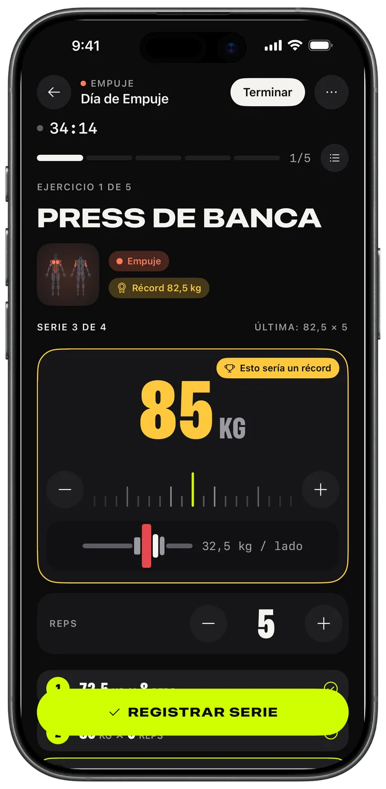
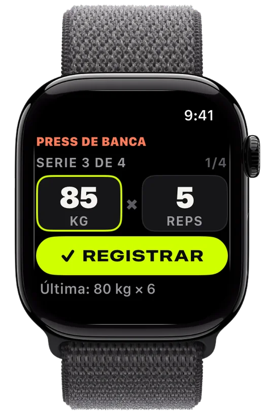
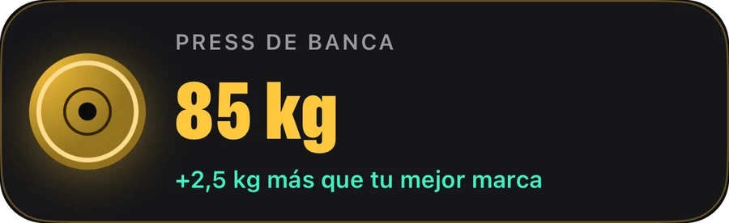
Registro
Ajusta los discos, registra la serie y supera la última vez. Replex recuerda lo que levantaste y prepara la siguiente serie antes que tú.
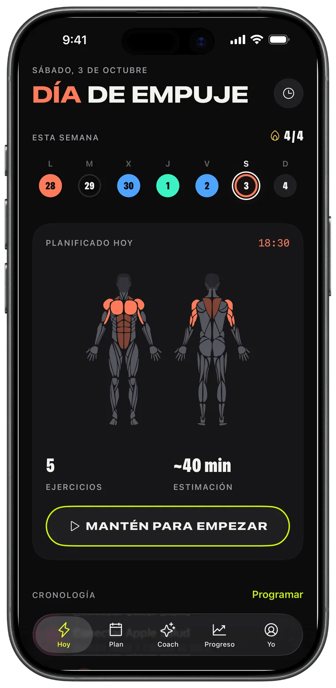
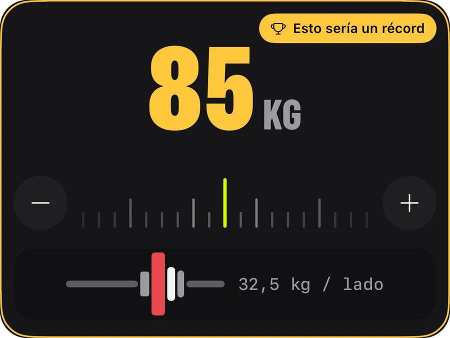
Apple Watch
Deja el teléfono en la mochila. Gira la corona para ajustar peso y repeticiones, toca REGISTRAR y tu iPhone se sincroniza al instante.
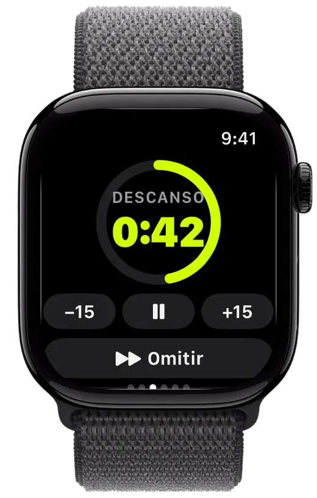
Progreso
Un volumen que sube semana tras semana, cada récord que logras y la tendencia de cada ejercicio, para que sepas que el esfuerzo está dando frutos.
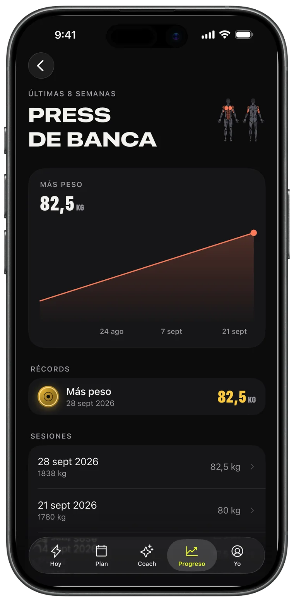
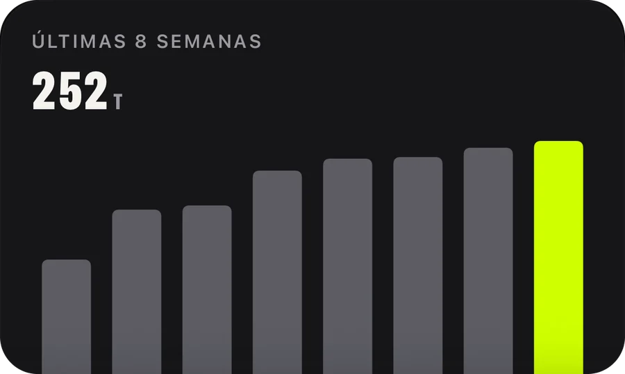
Coach de IA · Pro
Pide una semana y llega a tu calendario. El Coach lee tu entrenamiento real —sesiones, récords, carreras— y planifica en torno a él.
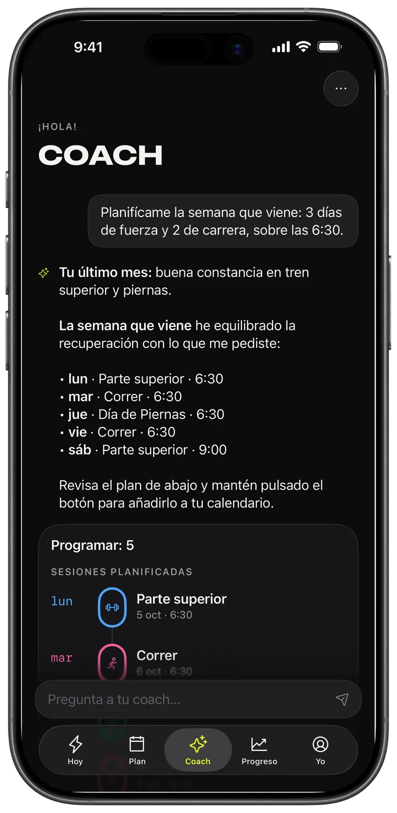
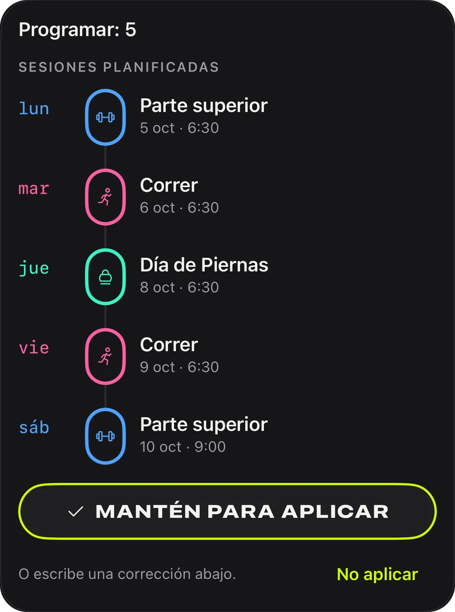
Planes
Empuje, tirón, piernas, torso/pierna, cuerpo completo: 44 planes listos para empezar hoy, o crea el tuyo y ponlo en repetición.
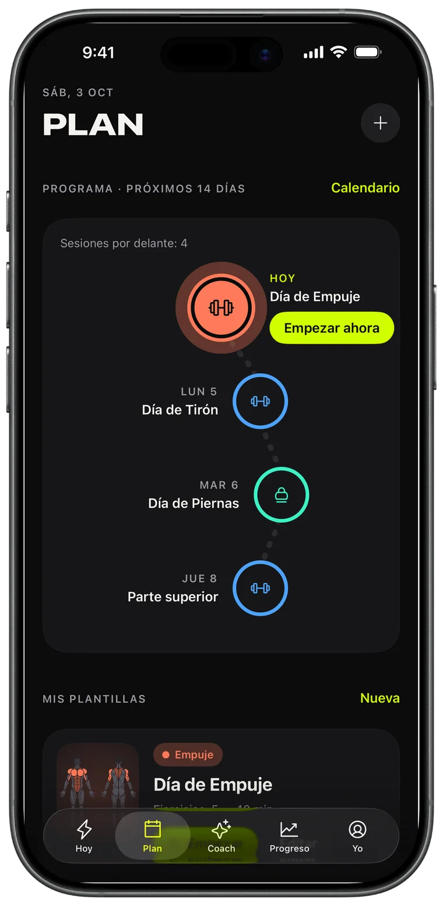
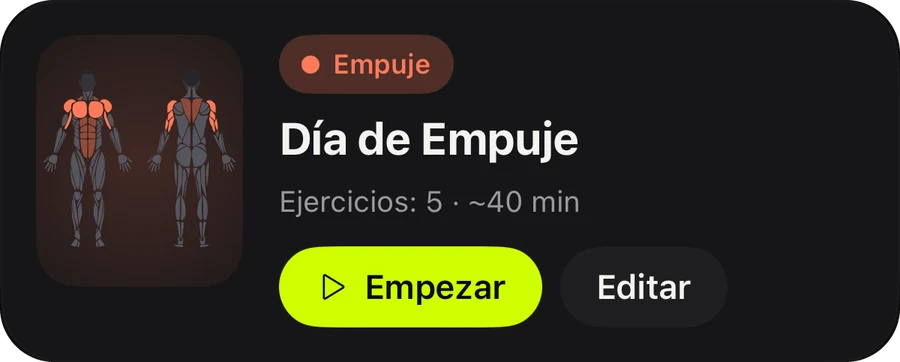
Compartir
Cada entrenamiento terminado se convierte en una tarjeta para tus stories con tu volumen, tiempo y récords. Publícala o guárdala como prueba.
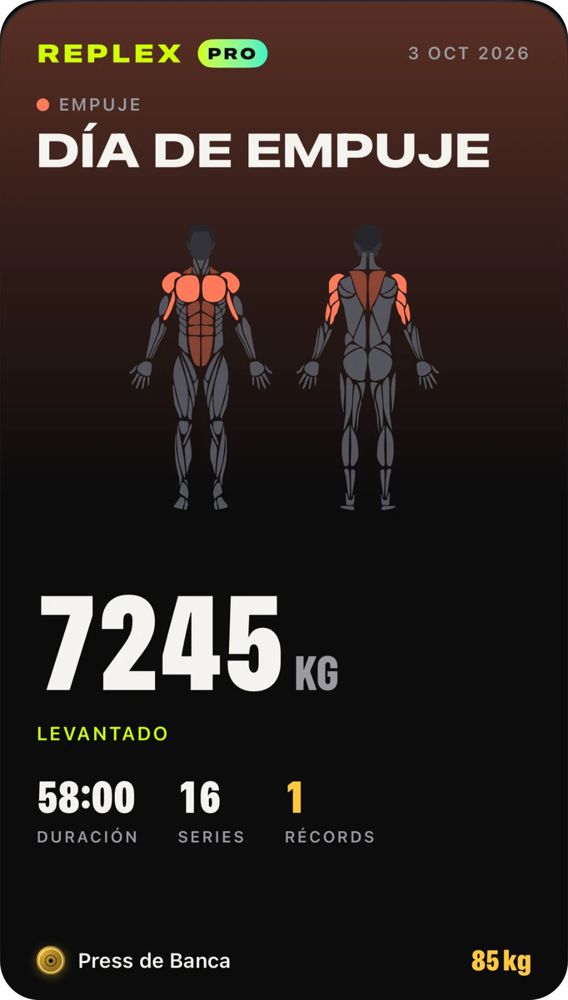
El cardio de cualquier app aparece con mapa de ruta, ritmo y zonas de frecuencia cardiaca.
Tu serie, tu descanso y tu frecuencia cardiaca en la pantalla bloqueada y en la Dynamic Island.
Entrenamientos, plantillas y planes en todos tus dispositivos, solo para ti.
Mira qué trabaja una sesión antes de empezar y qué músculos has entrenado esta semana.
Kilos, libras o stones; ejercicios con peso corporal y por tiempo incluidos.
Modo claro u oscuro y tres acentos: Volt, Azul y Rosa, con iconos de app a juego.
Todo lo que necesitas para registrar y progresar.
Para quienes planifican con antelación.
Pro está disponible en la app con pago mensual, anual o como compra única de por vida. Las suscripciones se pueden cancelar en cualquier momento desde tu Cuenta de Apple.
Descarga Replex y registra tu primer entrenamiento en menos de un minuto.
No. Replex funciona completamente en el iPhone. Con un Apple Watch puedes registrar series, usar el temporizador de descanso y medir tu frecuencia cardiaca desde la muñeca.
Sí. Replex se puede usar gratis: registro, temporizador de descanso, 5 planes con peso corporal, récords de tus sesiones recientes y 5 entrenamientos en el Apple Watch. Replex Pro —mensual, anual o compra única de por vida— añade el Coach de IA, los 44 planes, tus propias plantillas y su programación, el historial completo y entrenamientos ilimitados en el Watch.
En tus dispositivos y en tu iCloud privado. Los entrenamientos también se pueden guardar en la app Salud. El Coach de IA solo ve lo que necesita para responderte, y solo cuando se lo pides.
Kilos, libras o stones, y el cargador de discos usa tu unidad.
En 54, entre ellos español, inglés, portugués, francés, alemán, japonés, coreano, chino, árabe y hebreo.